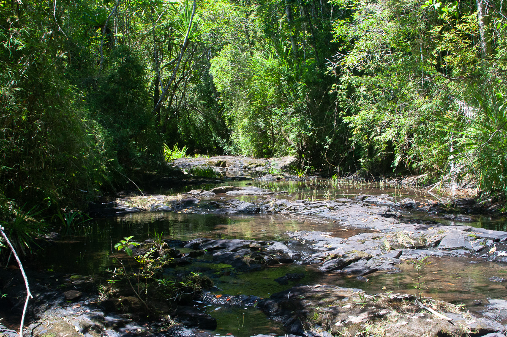

Collection Site: 13_X_2006_C

Site Details
Site Summary
Location: -23.026111 °S, 47.73 °E
- Bedotia sp nov "Manombo"
Species Collected
- pH: 6.15
- Conductivity: 164.0 µS
- Temperature: 82.7℉ (28.17℃)
Water Parameters
Site Discussion
Instream vegetation present, little direct overhead cover, cover along banks. Stream is source of water for large marshy area.
Stream upto 25 feet wide, narrows to 3 feet and become shallow as enters marshy area.
Depth up to 5 feet, shallows to 1 foot. Narrow, deeply incised channel in some areas.
Bottom appears as packed mud and leaf litter.
Numerous small Gobidae of various sizes. No Gambusia affinis observed in this stretch.